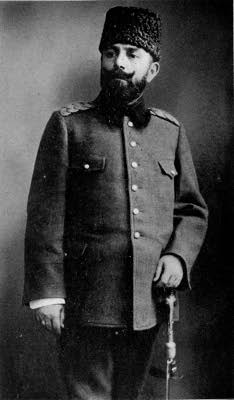
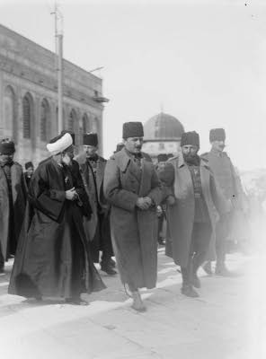

İttihat ve Terakki Hükümeti tarihinde, Talât ve Enver Paşalardan sonra en mühim mevki alan Cemâl Paşa’dır. Nitekim bu üç zat aynı tarihte Ekânîmi Salise (üç esas) unvanını almışlardı.
Cemâl Paşa, hayatının ilk devrelerinde, hiçbir fevkalâdelik göstermemiştir. Hatta İttihat ve Terakki Cemiyeti’ne intisap edinceye kadar, hayatı tamamıyla sönük geçmiştir. Ancak bu cemiyete girdikten sonra, maddi ve manevi enerjisini göstermiştir.
1872 senesinde, İstanbul’da dünyaya gelmiştir. Muntazam tahsil takip etmiştir. Zekâsı ve kuvvetli hafızası sayesinde askeri mekteplerde daima parlak muvaffakiyetler kazanarak erkânı harp yüzbaşılığı ile tahsilini bitirmiştir. Üçüncü Ordu’ya tayin edilmiştir. O tarihte erkânı harpler için tayin edilmiş olan müddetler zarfında terfi ederek, bulunduğu vazifelerde daime liyakat göstermiş nihayet, aynı ordunun Müşiriyet (mareşallik) Erkânıharbiyesi arasına girmiştir.
Çok zeki ve gayet faal olduğu için, bir taraftan bu askeri vazifesini devam ederken, diğer taraftan bazı vilayet nafia (bayındırlık) işlerinde de hizmetinden istifade edilmiştir. İşte böylece, Selânik’teki genç zabitler arasında temayüz eylemiştir (sivrilmiştir).
İttihat ve Terakki Cemiyeti’nin müessislerinden (kurucularından) değildir. Fakat Cemiyet’in teşekkülünden sonra, kuvvetli şahsiyetler arayan erkânı asliye tarafından gönderilen rehberlerin delâletiyle Cemiyet’e ithal edilmiştir.
O tarihte binbaşı olan Cemâl Bey’in Cemiyet’e girmesi, derhal hayatında bir değişiklik husule getirmiş ve adeta hayatının ilk dönüm noktasını teşkil eden bu hadise, onun ikbal yıldızının parlamaya başlamasını temin eylemiştir.
Cemâl Bey, büyük bir faaliyetle işe başlamıştır. Cemiyetin teşkilât işlerini üzerine almıştır. Müşiriyet erkânıharbiyesindeki vazifesinden başka Şimendifer Hat Müfettişi de olduğu için gezip dolaştığı yerlerde merkezler teşkil etmiş, cemiyetin kuvvetlenmesini temin eylemiştir. Aynı zamanda Selânik’te Bölük yani mahalle teşkilâtını vücuda getirerek cemiyetin merkezini de böyle kuvvetlendirmiştir.
Müşiriyet (mareşallik) Erkânıharbiyesinde, cemiyetin başlıca üç kuvvetli şahsiyeti bulunuyordu. Bunların ilk ve birincisi Binbaşı Cemâl Bey’di. Kısa bir müddet sonra, Kolağası Fethi Bey’de - Kesriye taburu kumandanlığından- buraya nakledildi. Yine kısa bir müddet sonra Kolağası Mustafa Kemal Bey’de Şam’dan geldi ve bu suretle, bu üç genç, ateşli ve inkılâpçı erkânıharpler, aynı dairede birleştiler.
Cemiyet, bütün kuvvet kaynaklarını adeta buradan alıyordu. Çünkü bu üç zat tarafından, teşkilâta çok faydalı hizmetler ifa ediliyordu. Ordu zabitlerinden ekserisi (çoğunluğu), işleri için bu zatlara müracaat ediyorlardı. Bunlar, Cemiyet’e dahil olan zabitlerin işlerini kolaylaştırıyorlar, onları Cemiyet’e bir kat daha bağlıyorlar, henüz dahil olmayanları da vatanperverâne telkinlerle ikaz ederek, Cemiyet’e girmeğe teşvik eyliyorlar, bu suretle inkılâbın temellerini kuvvetlendiriyorlardı.
Böyle olmakla beraber, Cemâl Bey henüz Cemiyet’in ikinci planında idi. Ancak, Meşrutiyet’in ilanından sonra, Merkezi umumi âzalığına seçilmek suretiyle birinci plana geçti.
*
Meşrutiyetin ilanını müteakip, Cemiyet’i temsil etmek üzere Selânik’ten İstanbul’a on kişilik bir heyet gönderildi. Bunlardan biri de, Binbaşı Cemâl Bey’di. Bir müddet, arkadaşlarıyla beraber faaliyet gösterdi. Sonra Merkezi umumi tarafından Anadolu’ya gönderilen ıslahat heyeti arasına girdi. 31 Mart Vakası patladığı zaman Gebze’de idi. Orada büyük bir ölüm tehlikesi geçirdi. Kendisini tanıyan mürteciler tarafından, az kalsın parça parça edilecekti. Fakat kaçmaya muvaffak olarak Ayastafanos’a geldi. Ve Hareket Ordusu’na iltihak ederek, ordu ile İstanbul’a girdi.
İstanbul’da, evvelâ İdare-i Örfiye heyeti arasında bulundu. Sonra Üsküdar Mutasarrıflığına tayin olundu.
O tarihte İstanbul halkı pek laubali idi. Birçok gençler ve ihtiyarlar, mahallelerinden gecelik kıyafetiyle gezerler, kahvelere bu garip kılıkla giderlerdi. Cemâl Bey ilk iş olarak, bu çirkin vaziyeti menetti. Böylece, adeta içtimai (sosyal) hayatımızda bir inkılâp vücuda getirdi.
Bu esnada kaymakamlığa terfi eden Cemâl Bey, askerlikteki vazifeleri kadar, sivil idare işlerinde de liyakat gösterdi. Buna binaen evvelâ Adana, sonra Bağdat valiliklerine tayin edildi.
Cemâl Bey, Bağdat valisi olduğu zaman henüz bıyıklı idi. Fakat o tarihe kadar Bağdat Vilayetine, hatta bütün Arabistan vilayetlerine sakalsız vali göndermek adet olmadığı için, Cemâl Bey de eski Babıâli ananesine tâbi olarak sakal koyverdi.
Cemâl Bey’in tabiatı sert ve haşindi. Hususi hayatında neşeli, samimi, hatta biraz da laubali olmasına rağmen, resmi işlerde en küçük müsamahayı bile kabul etmeyecek derecede vazifeperverdi. Buna binaen, Adana ve Bağdat’ta bir kısım halkı memnun edemedi. Aleyhinde bir hayli dedikodular zuhur etti. Fakat kendisi, İstanbul’dan ne kadar uzakta bulunursa bulunsun, Merkezi umumideki mevkiini daima muhafaza edecek kadar zeki ve kudretli olduğu için, aleyhindeki dedikodular hiçbir tesir husule getiremedi.
Balkan Harbi başladığı zaman, Cemâl Bey artık sivil hizmette bulunmak istemedi. Valilikten istifa ederek İstanbul’a geldi. Harbiye Nezareti’nden, vazife talep etti. Konya Redif Fırkası Kumandanlığına tayin edildi. Bu fırka ile Vize’de harbe girdi. Pınar Hisar’da bütün ordu gibi mağlubiyetle geri çekildi.
Bu mağlubiyet, Cemâl Bey’e çok acı geldi. Kıtayı terk ederek vazifesini Umumi Menzil Müfettişliğine tahvil ettirdi.
O sırada düşman orduları Çatalca müdafaa hattına dayanmış, aciz ve zaaf içinde bulunan Kâmil Paşa kabinesi tarafından zelilâne (alçakça) bir mütareke yapılmıştı.
İttihatçılar bu vaziyete tahammül edememişler, kabineyi devirerek idareyi yine kendi ellerine almaya karar vermişlerdi. Bu cür’etkârane işe Cemâl Bey de iştirak etti. Talât ve Enver Paşalara dair yazdığımız kısımlarda arz ve izah ettiğimiz şekilde, Babıâli’ye hücum edilerek, Kâmil Paşa Kabinesi devrildi. İttihatçılar yine iktidar mevkiine geçti. Bu meselede muvaffakiyetin temini için, Cemâl Bey büyük bir zekâ ve cesaret esiri göstermişti. Sadaret makamına getirilen Mahmut Şevket Paşa’nın emriyle İstanbul muhafızlığı, Cemâl Bey’e tevdi edildi.
Günler geçtikçe, İstanbul’un vaziyeti çok nazik ve tehlikeli bir devreye girdi. İttihat ve Terakki Cemiyeti’nin muhalifleri ve bahusus birtakım Çerkezler -Babıâli baskınında katledilen Nâzım Paşa’nın intikamını almak ve aynı zamanda İttihatçıları devirerek kendileri iktidar makamına çıkmak için - gizli teşekküller vücuda getirmişlerdi.
Gizliden gizliye haber alınan bu teşekküller, memleketin umumi siyasetini tehdit ediyordu. Ve Cemâl Bey de, bu sinsi tehlikenin önüne geçmek için bütün gayretini sarf ediyordu.
Cemâl Bey’in bu vaziyeti de onun hayatında ikinci bir dönem noktası teşkil etti. Çünkü İstanbul Muhafızlığını kabul ettiği dakikadan itibaren, devletin umumi siyaseti ile alakadar olan bir makama geçmişti. İstanbul payitaht olduğu için, burada cereyan edecek herhangi bir hadise, hiç şüphesiz ki, memleketin her tarafında büyük tesirler husule getirecekti. Buna binaen İstanbul Muhafızı demek, her şeyden evvel İttihat ve Terakki cemiyeti ve hükümetinin muhafızı demekti.
*
Cemâl Bey, 1913 senesi Kânunusani ayının 23. günü deruhte ettiği (üstlendiği) bu vazifeye, çok büyük bir gayret ve faaliyetle devam etmeye başladı. Fakat mukadder olan büyük bir hadisenin önünü alamadı… İstanbul’da sivil ve asker mühim bir zabıta kuvveti bulunmasına rağmen, Muhalifler büyük bir cür’etle harekete geçtiler.
1913 senesinin Haziran ayının 15. Çarşamba günü, Beyazıt meydanında Mahmut Şevket Paşa’yı şehit ettiler. Muhaliflerin maksadı, yalnız Mahmut Şevket Paşa’yı öldürmek değildi. Onlar, hazırladıkları fedailer vasıtasıyla aynı zamanda bütün İttihat ve Terakki cemiyeti erkânını öldürecekler, el çabukluğu ile bir taklibi hükümet yaparak iktidar mevkiine geçeceklerdi.
Eğer Cemâl Bey derhal vaziyete hâkim olmasaydı hiç şüphesiz ki, Muhalifler bu programlarını tatbik edeceklerdi. Fakat katillerin derhal ele geçmesi ve Cemâl Bey tarafından pek sıkı inzibat tedbirlerinin ittihaz edilmesi, muhaliflerin programlarını altüst etti. Bu harekete cür’et edenlerden ekserisi, cürümlerinin cezasını kendi hayatlarıyla ödediler.
*
Bu hadiseler cereyan ederken siyasi vaziyet de pek fena bir şekle girmiş, İttihatçıların bütün gayretlerine rağmen Çatalca müdafaa hattının önündeki düşman orduları mağlup edilemeyeceği için, Londra’da başlayan sulh müzakeresinin hazırlıklarına, Midye - Enez hattının hudut olarak kabul edilmesi zarureti baş göstermişti.
Fakat Babıâli Baskınını yapan İttihatçıların, bu hareketlerini mazur göstermeleri ve düşman ordularının İstanbul kapılarına kadar dayanmasından müteessir olan halkı, bir muvaffakiyetle sevindirmeleri elzemdi.
İttihatçılar buna bir çare düşünmekle meşgul olurlarken, Yunanlılarla, Sırplar ve Bulgarlar arasında bir ihtilaf zuhur etti. Nihayet bu ihtilaf, harp ile neticelendi. Enver Bey faslında naklettiğimiz veçhile, bu fırsattan istifade olunarak, Edirne istirdat edildi (geri alındı).
Vakıa bu cür’etkarâne harekete atılan, bizzat Enver Bey’di. Fakat O’nun muvaffakiyetini temin edecek amilleri hazırladıkları için, bu istirdat şerefine Talât Bey gibi Cemâl Bey de iştirak etti.
*
Enver Bey’i Paşalıkla Harbiye Nezareti makamına geçirmeye karar veren cemiyet, Cemâl Bey’i de ihmal edemedi. Onu da paşalığa terfi ettirerek bir nezarete geçirmek lâzım geldi.
Cemâl Paşa, Bahriye Nezaretini (Denizcilik Bakanlığını) istedi. Fakat bu arzusu, birdenbire yerine getirilemedi. Evvelâ Nafia Nezaretine (Bayındırlık Bakanlığına) getirildi. Sonra da, Bahriye Nezaretine nakledildi.
Cemâl Paşa, her iki nezarette de muvaffakiyet gösterdi. Bilhassa Bahriye Nezaretinde derhal ıslahata girişti. Donanmayı, denize çıkacak ve manevralarla meşgul olacak bir hale getirdi.
Artık 1914 Cihan Harbi’nin kokuları çıkmaya ve İttihatçılarda kendilerine Avrupa’da bir dost ve müttefik aramaya başlamışlardı.
Ruslar boğazları istilaya karar vermiş oldukları için, böyle bir ittifaka yanaşmıyorlardı.
İngilizler, İttihatçıları sevmiyorlar, muhtelif sebeplerden dolayı, Türklerle itilaf akdetmeye yanaşmıyorlardı.
İttihatçılar başlıca iki devletten medet umuyorlardı. Bunlardan birisi Almanlar, diğeri de Fransızlardı.
Cemâl Paşa, öteden beri kendisini Fransızlara sevdirmişti. Bu sebepten dolayı, arkadaşları tarafından Fransızlarla bir itilaf (anlaşma) akdine memur edildi.
Bahriye Nazırı, yanına iki bahriye zabiti alarak Fransa’ya gitti. Fransız fabrikalarına birçok toplar ve küçük gemiler sipariş verdi. Hâlbuki hakiki maksadı, Fransızlarla bir dostluk mukavelesi akdetmekti.
Fransızlar, siparişleri büyük bir memnuniyetle kabul ettiler. Fakat siyasi bahis açılınca Cemâl Paşa’ya karşı yüzlerini ekşittiler. Ve eline bir Lejyon Donör[26] nişanı vererek Paşa’yı başlarından savıverdiler.
İttihatçılar için artık Almanlarla anlaşmaktan başka çare kalmamıştı. Nitekim Cemâl Paşa’da hararetli bir Fransız taraftarı olduğu halde, Sadrazam Sait Halim, Harbiye Nazırı Enver Paşalarla, Dâhiliye Nazırı Talât Bey tarafından gizlice akdedilmiş olan Türk - Alman İttifak Muahedesini kabule mecbur oldu.
Nihayet 1914 Cihan Harbi patladı. Osmanlı Hükümeti de seferberliğe başladı.
Seferberlik ilanının üçüncü günü Cemâl Paşa, Bahriye Nazırlığı yine uhdesinde kalmak üzere, İkinci Osmanlı Ordusu Kumandanlığını deruhte etti (üstlendi). Fakat bu ordudaki kumandanlığı, on beş günden fazla devam etmedi. Süveyş Kanalı’nı cebren geçerek Mısır’daki vaziyete hâkim olmak planını takip eden Enver Paşa, bu planını tatbikini bilhassa Cemâl Paşa’dan istedi.
Teşebbüs mühimdi. Muvaffakiyet takdirinde, Osmanlı Ordusu çok büyük bir şeref ihraz edecekti (kazanacaktı). Cemâl Paşa, Enver Paşa tarafından vuku bulan bu teklifi reddedemedi. Dördüncü Ordu Kumandanlığını kabul etti. Ve tantanalı bir teşyi merasimi ile Haydarpaşa garından hareket ederken, parlak bir nutuk söyledi.
Cemâl Paşa bu nutkunda:
— Vazifemin yüksekliğini takdir ediyorum ve bu vazifeyi ifa ederken, en büyük müşküllerle karşılaşacağımı da biliyorum. Muvaffakiyet kazanmak için, hiçbir fedakârlıktan geri durmayacağım. Eğer muvaffak olamazsam, kanalın sularını kendimin ve kahraman arkadaşlarımın cesetleriyle dolduracağım. Hiç şüphesiz ki, arkada kalan kahramanlar bizim cesetlerimizin üzerinden geçerek Mısır topraklarına girecekler. Bu İslam ülkesini, İngilizlerin istilâsından halâs edecekler, dedi.
Cemâl Paşa, bütün geçtiği istasyonlarda harikulade alkışlar toplayarak, Evvelâ Suriye’ye oradan da 12 bin kişilik bir seferi kuvvetle Tih çöllerini aşarak Süveyş Kanalı sahillerine gitti.
Kanalı geçmek teşebbüsü, cidden büyük bir kahramanlıkla başladı.
Hatta İngilizlerin sel gibi akıttıkları ateşlere rağmen, küçük bir Türk müfrezesi, büyük bir muvaffakiyetle kanalı geçerek Mısır topraklarına ayak bastı.
Fakat ne yenilmek ve ne de mukavemet edilmek imkân haricinde olan düşman ateşi, kanal sularını aşmak için lâzım olan nakil vasıtalarını parçalamıştı. Seferi kuvvetin ancak 24 saatlik yiyecek ve içeceği olduğu için, orada daha fazla kalındığı takdirde bütün askerler açlıktan ve susuzluktan mahva mahkûm olacaklardı.
Cemâl Paşa, büyük bir ıstırap içinde ricat (geri çekil) emri verdi. Dördüncü Ordu Kumandanının ilk harp hareketi, muvaffakiyetsizlikle neticelenmişti.
Şu ciheti de ilave etmek lâzımdır ki, Haydarpaşa Garı’nda o parlak nutku söylemekle beraber, Cemâl Paşa bu kanal seferinin tam bir muvaffakiyetle neticeleneceğine samimi bir surette kani değildi (inanmıyordu). Almanlar tarafından tertip edilen ve tatbiki bilhassa Enver Paşa tarafından beklenen bu vazifeyi, ancak askerlik disiplinine itaatine göstermek ve aynı zamanda, Osmanlı Ordusu’na bir muvaffakiyet temin edebilmek için kabul etmişti.
Cemâl Paşa, Suriye’de bulunduğu müddet zarfında bu vazifeyi ifa edebilmek için bütün gayretini gösterdi. Eğer Arap komitacıları, Yahudi casusları ve bunlara inzimam eden Şerif Hüseyin isyanı Onun bütün muvaffakiyetlerini baltalayan birer hain amil olmasaydı, hiç şüphesiz ki, Cemâl Paşa maksadı tamamıyla temin edecek, Mısır’ı istila edemese bile, İngilizlerin Suriye’de ilerlemelerinin önünü alacaktı.
Cemâl Paşa, ne Talât Paşa gibi kalender meşrepti (alçakgönüllüydü), ne de Enver Paşa gibi mütevazı ve muhafazakâr. Bilâkis tab’an (yaradılıştan) azametli, gösterişi sever, biraz da zevk ehli ve hovarda meşrepti.
Suriye’de, herhangi bir ordu kumandanı gibi yaşamıyordu. Karargâhı, müheyyip (heybetli) ve muhteşem bir manzara arz ediyor, kendisi de haiz olduğu hudutsuz salahiyete yakışacak bir debdebe ve azamet gösteriyordu.
Cuma günleri hususi merasimle namaza gidiyor. Bu gidiş gelişi, İstanbul’daki Osmanlı sultanlarının küçük mikyasta (ölçüde) bir Selamlık resmi âlisi’ne benziyordu.
Şam ve Beyrut eşrafı tarafından şerefine parlak ziyafetler veriliyor, Cebel’in en güzide köşelerinde, hususi alemler tertip ediyordu.
Cemâl Paşa, yalnız ordu işleriyle meşgul olmuyordu. Elinde pek geniş salahiyet ve yedi milyon altın liralık tahsisatı mesture olduğu için, memleketin ümran ve ticaret sahasında da faydalı işlere girişiyordu.
Onun bu muhteşem vaziyeti ve semeredar (verimli) olan faaliyeti, dostlarının memnun ediyor, düşmanlarının ise, kin ve gayzını harekete getiriyordu.
Evvelâ hafif tertip başlayan dedikodular gün geçtikçe artıyor. Ve nihayet, Suriye hudutlarını aşarak İstanbul’a kadar aksediyor, Babıâli’de devlet erkânının odalarında, Meclisi Meb’usan koridorlarında ve Merkezi umumi salonlarında, Cemâl Paşa’nın lehinde ve aleyhinde bir takım cereyanlara sebebiyet veriyordu.
Bazıları, bir ipek ve tütün meselesini dillerine dolamışlardı. Cemâl Paşa’yı ağır ithamlara maruz bırakacak sözlerle bir taraftan Talât Paşa’yı, diğer taraftan da bir aralık Dâhiliye Nazırı olan İsmail Canbolat’ı tahrik ediyorlardı.
Cemiyet’in asli erkânından hiçbiri, o zamana kadar en küçük bir ihtirasa kapılmamıştı. Onlar, irtikâp (yiyicilik) ve irtişa (rüşvet) gibi gayri meşru menfaatlere tenezzül etmek şu tarafa dursun, en meşru şekillerde zengin olmayı dahi Cemiyet’e karşı ettikleri yemine bir ihanet telâkki ediyorlardı. Buna binaen, Cemâl Paşa hakkında şiddetli bir ısrarla devam eden bu ipek ve tütün dedikodularından müteessir oluyorlar, bu bapta Cemâl Paşa’dan izahat istemeyi düşünüyorlardı.
Dedikoducular ikiyüzlü rol oynuyorlar, bir taraftan Cemâl Paşa aleyhinde Babıâli’de, Mecliste ve Merkezi umumide dedikodu yaparlarken, diğer taraftan da, aynı yerlerdeki cereyanları Cemâl Paşa’ya bildirerek Onu da eski ve samimi dostları aleyhine tahrik ediyorlardı.
Cemâl Paşa, bir müddet bu dedikodulara ehemmiyet vermek istemedi. Fakat nihayet öyle bir gün geldi ki, artık sabrı tükendi. Talât Paşa’ya ait kısma dercettiğimiz (yazdığımız) iki mektup ile eski arkadaşlarını ağır surette tahkir (hakaret) ettikten sonra, artık Merkezi umumi’ye meydan okurcasına bir vaziyet almak lüzumunu hissetti.
Araya bir soğukluk girmişti. Hatta Talât Paşa’nın, Cemâl Paşa aleyhinde bir skandal çıkararak onu mevkiinden ıskat edeceğine (düşüreceğine) dair rivayetler bile işitildi. Nitekim harbin son aylarına doğru Cemâl Paşa ordu kumandanlığından çekilerek İstanbul’a geldikten sonra, bir takım mühim hadisata intizar edildi (beklendi). Güya Enver Paşa, Cemâl Paşa’nın müsellah (silahlı) bir bahriye kuvveti ile kendisine hücum edeceğini haber almış, hayatını ve mevkiini muhafaza etmek için sureti mahsusada, birkaç bataryalık bir Avusturya topçu kuvveti getirmiş, Talât Paşa ise bir takım fedailerden mürekkep olmak üzere, hususi bir muhafaza kuvveti teşkil etmiş.
Hâlbuki bütün bu rivayetler, ekserisi (geneli) muhaliflere dayanan asılsız şayialardan (söylentilerden) ibaretti. Meselenin hakikati şu idi ki, Cemâl Paşa İstanbul’a gelir gelmez, Merkezi umumi’de bütün arkadaşlarına hesap vermiş, mütemadi dedikodularla az çok sarsılması tabii olan dimağlara, derhal sükûnet gelmişti.
*
Harbin son günlerine doğru, Talât Paşa Berlin’e gitmişti. Avdet ederken (dönerken), Sofya’da, Bulgar hezimetini öğrendi. Büyük bir teessürle İstanbul’a döndü. Ve alakadar arkadaşlarına, en açık bir lisan ile:
— Harp, kaybedilmiştir, dedi.
Gelen büyük felâketi karşılamak için derhal müzakerelere başlandı. Fakat artık hükümet makinesini Fethi Bey, Rauf Bey, İzzet Paşa gibi hamiyetli (vatansever) zevatın ellerine bırakarak bir tarafa çekilmekten ve aynı zamanda İttihat - Terakki Fırkası’nı da feshetmekten başka çare bulanamadı.
Görünüşleri son derecede şaşalı olduğu halde, hakikatten büyük bir tevazu içinde yaşayan bu talihsiz adamlar, senelerden beri büyük bir hüsnü niyet ve azami gayretle çalıştıkları halde muvaffak olamamışlardı.
Her tarafta hezimet başlamıştı. Artık düşman ordularına “pes” diyerek mütarekeyi kabul etmekten başka çare kalmamıştı. Hâlbuki Talât Paşa’nın kabinesi, vaktiyle Sait Halim Paşa’nın riyasetinde bulunduğu zaman harbi kabul ettiği için şimdi mütareke yapamazdı. Bu itibarla kabinenin istifasına lüzum vardı.
Kabine istifa etti, fırka feshedildi. Sıra İttihat ve Terakki’nin başka mümessilleri olan ve bugün de çok ağır ithamlar altında kalan Talât - Enver - Cemâl Paşalar gibi zevatın şahsiyetlerini düşünmeye kaldı.
Muhaliflerin hain teşvikleriyle, İttihatçıların aleyhinde bir cereyan başlamıştı. Ermeni ve Rumlardan mürekkep bir takım intikam unsurları da, bu cereyanlara uyarak adeta, halkı bunların aleyhine tahrikâta koyulmuşlardı. Mütareke şartlarının icabından olarak o günlerde İstanbul’a galiplerin gemileri ve askerleri de gelecek olursa, hiç şüphesiz bir takım mühim hadiseler başlayacak, belki de İstanbul kanlı vakalara sahne olacaktı.
Başta Fethi Bey gibi bazı ağır başlı zevat olmak üzere eski ve temiz İttihatçılar, talihsiz arkadaşlarının akıbetlerinden endişede bulunuyorlar. Mütareke dolayısıyla şımaracak olan Rum, Ermeni ve Yahudi gibi taşkınlıkları geçip de tabii halin avdetine (dönmesine) kadar, bunların ortadan kaybolmalarına lüzum görüyorlardı.
Evvelâ, en ağır ithamlar altında bulunan Enver ve Cemâl Paşaların kaybolmalarına karar verilmişti. Enver Paşa, yanında vaktiyle Trablusgarp’tan getirdiği sadık emirberi ve Cemâl Paşa’da, uzun zaman kendisine şifre ve emir zabitliği vazifesini ifâ eden (yerine getiren) Seyfi Bey’le Yüzbaşı Nureddin Bey’i[27] alarak İzmit taraflarında tenha bir köşeye çekileceklerdi. Fakat tam bu kararın verildiği gün, Boyacıköyü’ndeki yalısına avdet eden (dönen) Cemâl Paşa, Akşam gazetesini okurken, gözüne bir fıkra çarptı. Hemen telefonu açarak, Enver Paşa ile şöylece konuşmaya başlardı:
— Akşam gazetesini gördün mü, Paşa?
— Ne var?
— Bulgar Başvekili Radoslavof, Berlin’e kaçmış.
— Yaaa!
— Evet.
— Şu halde… Vaziyette vahamet var.
— Öyle anlaşılıyor. Talât Paşa’yı hemen haberdar etmeli.
— Hep beraber görüşelim.
— Fena olmaz.
— Nerede?
— Yarın. Merkezi umumide.
Arz etmiştik ki, Cemâl Paşa biraz debdebe ve tantanayı severdi. İhtimal ki, mevkiinin şerefini muhafaza etmeyi istiyordu. Bu cümleden olarak, Bahriye nezareti (Denizcilik Bakanlığı) makamına mahsus olmak üzere, kırmızı boyalı ve muhteşem bir otomobil getirtmişti. Birçok haris ve hasetkârların bir hayli dedikodu yaptıkları bu arabayı da, henüz Bahriye Nezareti’ne göndermemişti.
Cemâl Paşa ertesi gün, yanına eski şifre kâtibi Seyfi Bey’i alarak ve büyük bir gaflette bulunarak bu otomobile bindi. Merkezi umumi’ye gitmek üzere yalıdan hareket etti. Fakat otomobil tam Sirkeci’ye gelip de, Babıâli caddesine sapar sapmaz o kadar büyük bir kalabalığın arasına giriverdi ki, ne bir adım ileri ve ne de geri gitmek mümkün değildi.
O gün, sadaret alayı oluyordu. Ve bütün cadde, bu alayı görmek için gelenlerle dolmuştu.
Herkes dik dik otomobile bakıyordu.
— Cemâl Paşa…
— Ay… Daha hâlâ bu otomobille mi geçiyor?
— İstifa ettiği halde, daha hala milletin malını, babasının malı gibi kullanıyor, diye bir takım mırıltılar işitiyordu.
Cemâl Paşa’nın rengi yemyeşil kesilmişti. O daima dimdik duran mağrur başı, ilk defa olarak önüne eğilmişti. Çünkü caddeyi dolduran binlerce kişinin içinde ittihatçıların kanlarına ekmek doğramıya hazırlanan birçok muhaliflerin bulunması, hiç şüphesizdi. Birkaç günden beri devam eden rezilâne propagandalar, sinirlerini o derece germişti ki, eğer o hayasız ve hasetkâr muhaliflerden biri, oradaki cahil ve idraksiz halka:
— Ne duruyorsunuz? Alın aşağı, diye bağıracak olsa herhalde, herhalde pek feci bir hâdise vukua gelebilirdi.
Fakat hayır. Yapılan hareket, o mırıltılardan ileri geçmedi. Ve hiçbir şey zuhur etmedi. Şeref ve haysiyet kaygısıyla hayatının en korkunç dakikalarını geçirmiş olan Cemal Paşa, en küçük bir taarruza uğramadan, Şeref sokağındaki Merkezi Umumî binasına geldi.
Felaketzede arkadaşlar bir odaya toplandılar. Şu iki madde üzerinde müzakereye başladılar.
1– Memleket dâhilinde mi kalmalı? Yoksa hudut haricine mi çıkmalı?
2– Talât Paşa da burada mı kalmalı? Yoksa o da Enver ve Cemal Paşalarla çıkmalı mı?
Bu müzakere esnasında, Almanya sefareti ateşenavali (deniz ateşesi) geldi. Derhal Cemal Paşa’yı görmek istediğini söyledi. Cemal Paşa müzakere odasından çıktığı zaman, bu iki zat arasında şu muhavere (konuşma) geçti.
— Ekselans! Umumî vaziyetin aldığı şekle nazaran, gerek sizin ve gerek arkadaşlarınızın burada kalmasını tehlikeli görüyoruz. Acaba bu hususta siz ne düşünüyorsunuz?
— Biz de aynı fikirdeyiz. Şimdi müzakere ettik ve memleket haricine çıkmaya karar verdik.
— Nereye gideceğinizi kararlaştırdınız mı?
— Şimdi onu konuşacaktık.
— Fakat öyle zannediyorum ki pasaport alamıyacaksınız.
— Evet, o da ayrı bir mesele? Bilmem ki ne yapacağız.
— Üzülmeye hacet yok Ekselans… Biz her ihtimali nazarı dikkate aldık. Sizi ve arkadaşlarınızı sessizce İstanbul’dan çıkaracak vasıtayı hazırladık. Bu teklifi kabul ettiğiniz takdirde, son kararınızı veriniz…
Cemâl Paşa heyecana geldi. Alman ateşnavalinin hararetle elini sıkarken.
— Böyle karışık bir zamanda, silâh arkadaşlığın haklarına gösterdiğiniz vefakârlığa teşekkür ederim, dedi.
Paşa, artık büyük bir faaliyetle çalışmaya başladı. Gerek Bahriye Nazırlığında ve gerek Ordu kumandanlığında kendisinin yazı işlerinde çalışmış olan Fatih Rıfkı Bey ile resmi ve hususî dosyaları ayırıyorlar. Resmi evrakı, ait oldukları dairelere yolluyorlardı.
Harp senelerinin iaşe darlığı esnasında Cemal Paşa’nın vasıtasıyla erzak alarak sıkıntı örmemiş olan en meşhur muhaliflerden muharrir Ali Kemal Bey ile diğer bazı muharrirler de gelip gidiyorlar, bunlar da bu evrak tasfiyesi işlerine yardım ediyorlardı.
Fakat Cemal Paşa, çok mühim bir düşünce içinde idi. Görünüşte, parlak bir debdebe ve tantana içinde yaşıyan bu koca sabık (eski) Ordu kumandanı ve Bahriye Nazırı’nın uzun bir seyahate çıkacak kadar değil, hatta İstanbul’dan kalkıp Bursa’ya gidecek miktarda dahi parası mevcut değildi.
Gece, bir aralık Enver Paşa geldi. Konuşurlarken, aralarında şu muhavere geçti:
Cemâl Paşa: — Azizim! Başımızı alıp gidiyoruz ama ne ile gideceğimizi hiç düşünmüyoruz. Benim yirmi, otuz lira param var. Tabiidir ki onları çocuklara bırakacağım. Fakat gittiğimiz yerlerde ne yapacağım?
Enver Paşa: — Biliyorsun ki, ben de senin vaziyetindeyim. Hatta Talât da bizim vaziyetimizde… Ben, yalnız bir şeye güveniyorum. Biraderim Nuri Paşa, henüz Kafkasya’da bulunuyor. Kendisinde zannedersem epeyce altın para var. Vakıa bu para, millete aittir. Fakat kendisinden senet mukabilinde biraz para alırız. Sonra millete borcumuzu öderiz.
Aynen cereyan etmiş olan şu kısa muhavere (konuşma), çok ibrete şayandı. Şunu düşünmelidir ki, bugün hayatlarının ölüm ve dirim noktalarında, acı acı parasızlıktan şikâyet eden şu adamın elinde henüz bir hafta evvel, milyonlarca lira raddesinde (derecesinde), tahsisatı mesture (örtülü ödenek) parası vardı.
Cemâl Paşa’nın refikası (eşi) çok müteessirdi. Eğer Paşa memleket dâhilinde bir yere çekilmiş olsaydı, bu ayrılık ona pek güç gelmeyecekti. Fakat dünyanın o karmakarışık zamanında, zevcinin hudut haricine çıkması, akıbeti meçhul olan bir yolculuğa atılması ona çok acı geliyor, bu ayrılıktan adeta bir felâket kokusu hissediyordu.
Cemâl Paşa, içi sızlaya sızlaya refikasını (eşini) teselliye çalışıyor ve adeta ağlamaya müheyya (hazır) bir çocuk gibi dudakları kıvrıla kıvrıla ona şöyle söylüyordu:
— Eğer ben ölürsem, hakkımda türlü türlü şeyler söyleyebilirler… Şayet siyasi hayatımdan bahsederler ve bu cihetten beni tenkide girişirlerse, bu işlerin iç yüzünü bilmediğin için, onlara layıkıyla mukabele edemeyeceksin. Eğer, askerlik ve kumandanlık noktasından tenkitlerde bulunurlarsa, bunlara da kâfi derecede cevap veremeyeceksin… Ancak senin çok iyi bildiğin bir şey vardır ki, senin ve de evlatlarımın kursaklarına bir lokma dahi haram şey sokmadım. Sizi ancak hizmetime mukabil aldığım para ile yaşattım. Bunu herkese bağıra bağıra söyleyebilirsin, diyordu.
Cemâl Paşa, çok doğru söylüyordu. O, hırsızlık etmemişti. Kendisinin hakkı olmayan hiçbir şeye elini uzatmamıştı.
Bütün büyük işler gören ve kalabalık insan kitlelerini idare eden adamlar gibi, ihtimal ki onun da bazı hataları, yanlışlıkları, hodbinlikleri (bencillikleri) ve hatta zayıf tarafları vardı. Fakat İttihat ve Terakki Cemiyeti’nin asli erkânını teşkil eden Talât gibi, Enver gibi ve Koca Osmanlı İmparatorluğu’nun mukadderatına hükmeden Cemiyet’in birinci planında bulunan bütün arkadaşları gibi, o da tertemiz kalmış, devlet ve milletin kesesinden hiçbir şey çalmamış, vicdanını karartmamış, fani dünyanın ihtiraslarına kapılarak zengin olmak sevdasına kapılmamıştı.
Tarih, belki muhtelif noktalardan bunları tenkit ve muaheze edecektir (eleştirilecektir). Fakat onlardan hiçbirini gayri meşru vasıtalara tenezzül ederek servet sahibi olmakla itham eyleyemeyecektir.
*
1918 senesi teşrinievvel (ekim) ayının 3. gecesi…
Saat 12’ye geliyor.
Unkapanı Köprüsü’nün yanına demirlemiş olan General ismindeki Alman vapurunun sancak baş omuzluğunda asılı olan Dizel Kano[28] sessizce denize iniyor. Direksiyona genç bir Alman zabiti oturuyor. Motor, Haliç’in simsiyah suları üzerinde büyük bir devir yapıyor. Ve sonra, bir ok gibi, Unkapanı Köprüsü’nün gözüne atılıyor. İki köprü arasını son sür’atle geçiyor. Galata Köprüsü’nün gözünden dışarı fırlıyor.
Gece zifiri karanlık, deniz oldukça dalgalı…
Fakat bu kuvvetli motor, esatiri (mitoljik) bir deniz mahlûku gibi, dalgaların üzerinden kayıyor. Etrafına köpükler saça saça Kuruçeşme’ye yaklaşıyor. Naciye Sultan Sarayı’nın açığında duruyor.
Alman zabiti, cebinden bir elektik feneri çıkarıyor. Objektifini saraya çeviriyor. Üç defa açıp kapıyor.
Saray, bol ışıklar içinde. Enver Paşa’nın firarına mâni olmak için sarayın kapısına ve bahçe tarafına yerleştirilen zabıta memurları, yerli yerinde.
Sarayın alt katı, kalabalıktır. Çünkü bu gece sarayda bir ziyafet vardır. Davetlilerin bir kısmı salonlarda bulunuyorlar. Bir kısmı da, rıhtımda geziniyorlar.
Birden bire, bütün şehir simsiyah kesiliyor. Bütün elektrik lambaları sönüveriyor. Büyük santralde, bir kaza olmuştur.
İşte o karanlıkta, rıhtımdan bir sandal ayrılıyor. Süratle sahilden açılıyor. Açıkta duran Dizel Kanoya yanaşıyor. Enver Paşa çevik bir hareketle, motorbota sıçrıyor. Motor hareket ediyor. Dalgaların üzerinde ok gibi seke seke, Boyacıköy’e yaklaşıyor.
Bu sırada Cemâl Paşa da, yaveri Salâhattin Bey ile yalının rıhtımından sandala biniyor. Salâhattin Bey, küreklere asılıyor. Sandal, Balta limanına doğru açılıyor. Orada motorla birleşiyor. Cemâl Paşa, Selahattin Bey’e veda ediyor. Ve motora geçiyor.
Motor her ihtimale karşı, izini kaybetmek için Anadolu sahiline doğru ilerliyor. Büyük bir devir yapıyor. Sonra Büyükdere önüne geliyor. Yolcularını, oradaki Ruslardan zapt edilmiş olan Alman tahtelbahrine (denizaltı gemisine) teslim ediyor. Ertesi gün Sadrazam İzzet Paşa, Cemâl Paşa tarafından gönderilmiş olan şu mektubu okuyor.
Boyacıköy
1 Teşrinisani 1334
Maruzu çakeri kemineleridir: (Hakir kulun dilekçesidir)
Uzunca bir müddet düşündükten sonra, bu aralık memleketimizden uzaklaşmayı muvafık-ı ihtiyat (uygun tedbir) telâkki ettim. Biliyorum, birçok mahrume-i haya (edep mahrumu) eşhas (şahıslar) bu uzaklaşmaya başka manalar vermeğe çalışacaklar. Lakin siz, herkesten ziyade bilirsiniz ki, benim ef’al (fiil) ve harekâtımda kanundan, kanuni muamelâttan (uygulamalardan) tevakki etmemi (çekinmemi) icap ettirecek hiçbir şey yoktur. Siyasî ve idarî icraat ve ef’alimin kâffesi (hepsi) için birer birer cevap vermeğe, efkârı millette bunların hesabını açık alınla edaya hazırım. Fakat bu galeyanlı zamanlarda, bulanık suda balık avlamak isteyen garezkâranın (kötü maksatlıların) ıtlakı lisan eyledikleri (genelledikleri) bu devri heyecanda bigayri hakkın (haksızlığa) duçar olabileceğim (düşeceğim) ufak bir tecavüze (saldırıya) tahammül edemeyeceğimi zatı devletleri de takdir buyurursunuz.
Memlekette, yalnız Kuvva-i Milliye’nin hâkim olduğu, mütareke şeraiti icabınca aramıza karışacak olan ecanibin (yabancıların) akdi sulh ile buradan uzaklaştığı zamana kadar, münasebetsiz taşkınlıklara hedef olmayacak bir mevkie çekilmeği istedim. Asker olduğum için tensibi devletleri üzerine irade-i seniyye istihsal etmedikçe (uygun devletler üzerine padişah emri çıkmadıkça) Avrupa’ya mezunen (izinli) gitmeye salâhiyettar (yetkili) olmadığımı bilirim. Fakat bazı mülâhazat (düşünceler), bu tarzda istihsali mezuniyete (yetki iznine) teşebbüs etmekten beni menetti.
Zatı Şevketsematı hazreti padişahı, her bir irade-i seniyyelerinin (emirlerinin) en şedit (şiddetli) mutavaatkârı (uyanı) olduğuma itimat buyurarak, bu hilafı usul hareketimi mazur görürler kanaatindeyim. Maahaza (bununla beraber), badema (bundan böyle) bilfiil hizmeti askeriye ifasına (yerine getirilmesine) kudretyab olamayacağımdan (gücüm yetmeyeceğinden) ayrıca takdim ettiğim resmi istidanamemi (dilekçemi) terviç buyurarak (destekleyerek) muamele-i tekaüdiyemin (emeklilik işlemlerimin) ifa buyurulmasını (yerine getirilmesini) sureti mahsusada istirham eylerim.
İstanbul’da pek kimsesiz bırakmağa mecbur olduğum evlat ve ayalimi, zatı devletlerinin himaye-i necibanelerinden göreceğime itimadım kavi bulunduğunu arz eder ve kariben (yakın zamanda) yine teşerrüf edebilmek ümidi ile ifayı lâzıme-i veda eylerim.
Sureti muhakkakada, mübarek ellerinizi öpmekliğime müsaade buyurunuz. Paşa hazretleri.
Bahriye Nazırı Sabıkı
Birinci Ferik Ahmet Cemal
Bu mektubun sahibi de -arkadaşları gibi- çıktığı meçhul yolun akıbetini bilmiyordu. Hele bu yolun, artık avdet (dönüş) imkânı olmayan bir çıkmaza saplanacağını aklından bile geçirmiyordu.
İkbal zamanlarında olduğu gibi şu idbar (düşkünlük) ve felâket anlarında da kafa kafaya vermiş olan bu eski arkadaşlar, Karadeniz’in şimal (kuzey) sahillerine doğru yaklaşırken, derin derin düşünüyorlar. Hayatta kendilerine yeni muvaffakiyetler kazandıracak olan birer faaliyet programı hazırlıyorlardı.
Ne yapacaklarına dair henüz kat’i kararlarını vermemişlerdi. Her şeyden evvel, doğruca Berlin’e gidip yerleşmek ve orada müşterek bir plan tertip ederek İtilaf Devletleri aleyhine mücadeleye devamı tasavvur etmektelerdi (tasarlamaktalardı).
Fakat Odesa rıhtımına ayak basar basmaz Enver Paşa’nın:
— Arkadaşlar! Yolumuz burada ayrılıyor. Size uğurlar olsun.
Demesi, Talât ve Cemâl Paşaların tasavvurlarını altüst ediverdi.
Talât Paşa’nın, Enver Paşa ile eski samimiyeti bir hayli haleldar (bozuk) olmakla beraber, o, birdenbire vuku bulan bu ayrılıktan müteessirdi.
Cemâl Paşa ise, bütün arkadaşlarına olan sadakatini mertçe muhafaza ediyordu. Böyle olmakla beraber, Enver Paşa’nın bu ayrılışından gizi bir memnuniyet duydu. Çünkü bu müfrit (aşırı) ruhlu ve taşkın heyecanlı arkadaşının, bundan sonra girişilecek işlerde de aynı suretle hareket edeceğinden endişe ettiği için, bir müddet ondan uzak kalmayı daha faydalı bulmuştu.
Enver Paşa’dan maada (başka), diğer arkadaşlar yani, - Talât ve Cemâl Paşalarla, Doktor Bahaettin Şakir, Nâzım, Cemâl, Bedri, Azmi ve Rüsuhi Beyler - trene bindiler. Uzun ve çok sıkıntılı bir yolculuktan sonra Berlin’e geldiler. Muhtelif (çeşitli) otellerde yerleştiler.
Bedri ve Azmi Beyler, bir müddet Cemâl Paşa’nın yanında bulundular. Berlin’in vaziyeti, hiçbir teşebbüse imkân bırakmayacak kadar fena olduğu için, onlar da ayrılarak, kendi başlarına birer çare aramak mecburiyetinde kaldılar.
Berlin, ihtilal ateşleri içinde yanıp kavruluyordu. Hiç kimse hayatından emin bulunmuyordu.
İhtilalciler, her gün birkaç defa otelleri basıyorlar. Yabancıların üzerlerine silâhlarını çeviriyorlar:
— Kimsiniz, necisiniz, nereden geldiniz, niçin geldiniz? diye inceden inceye isticvaptan (sorgudan) geçiriyorlar, şüphelendikleri en küçük bir cevap üzerine, ellerindeki silâhların tetiklerini çekiveriyorlardı.
Cemâl Paşa, bu şerait (şartlar) altında, Berlin’de ancak 15-20 gün kadar kalabildi. Oradan kalkarak Münih’e geldi.
Münih henüz sakindi. İspartaküs’ün bayrağı altında hareket eden Alman Bolşevikleri, henüz bu şehirde faaliyete girişmemişlerdi.
Cemâl Paşa, harp esnasında tanıdığı bir Alman profesörüne müracaat etti. O, kendisine Halit Baboviç isminde bir Boşnak pasaportu verdi. Paşa, bu pasaportla bir pansiyona yerleşti.
Lakin birkaç gün sonra, burada da ihtilal baş gösterdi. İki taraflı olan halk, müthiş sokak muharebelerine girişti.
Rivayete nazaran bu harplerin birinde Cemâl Paşa sokakta bulunuyordu. Atılan kurşunlardan masun kalmak (korunmak) için, derhal apartmanına savuşmaya mecbur oldu. Fakat tam sokak kapısına geldiği zaman, orada korkusundan titreyen bir kadına tesadüf etti. Bu kadın Cemâl Paşa’nın ellerine sarılarak:
— Efendi Beni, kurtarınız, dedi.
Cemâl Paşa hiç tereddüt etmeden kadını içeri aldı. Müsademe (çatışma) bitip de vaziyet tabii halini alıncaya kadar yanında sakladı.
Kadın teşekkür ederek, ayrılırken hüviyetini Cemâl Paşa’ya bildirdi. Kendisinin meşhur Lenin’in yahut Bolşevik reislerinden Radek’in zevcesi olduğunu bildirdi. Ve icap ettiği takdirde, kendisine her türlü yardımda bulunabileceğini de ilave etti.
O sırada Cemâl Paşa, henüz programını tespit etmemişti. Buna binaen kadından hiçbir yardım istemeye lüzum görmedi.
Aradan bir müddet geçti. Cemâl Paşa İsviçre’ye geçmek mecburiyetini hissetti. İstanbul’dan hareket edeceği gün Sapancalı Baki Bey’den ödünç olarak aldığı iki bin kâğıt lira tükenmişti. Hiçbir bildiği ve tanıdığı da olmadığı için, kimseden bir şey isteyemedi. Vaziyeti pek müşkülleşti.
Birdenbire aklına İsmet Paşa geldi… Cemâl Paşa, harp esnasında bu zatı Suriye’de tanımış ve çok sevmişti. Şimdi de onun İsviçre’de bulunduğunu işitmişti. Ona derhal bir mektup gönderdi. İsviçre’ye geçmesi için yardım istedi.
Şimdi, İstanbul’da Tramvay İdaresinin Hareket Müdürü olan İsmet Bey, Cemâl Paşa’nın mektubunu alır almaz, derhal hususi teşebbüslere girişti. Ve Cemâl Paşa’nın İsviçre’ye geçmesini temin etti.
İsviçre, hakiki bir sükûn içinde bulunuyordu. Fakat gün geçtikçe Cemâl Paşa’nın vaziyeti müşkülleşiyordu.
Parası tamamen bitmişti. Şimdi kendisine arkadaşlık eden İsmet Bey, zengin değildi. Paşa ise henüz bir program tespit edememişti. Ve Avrupa’nın vaziyetine nazaran, burada bir iş görmek de mümkün değildi.
Cemâl Paşa, ne yapacağını düşünüp dururken, bir gün gazetede gözüne bir fıkra ilişti. Bu fıkrada Afganistan’ın İngiliz tehdidi altında bulunduğundan bahsolunuyor ve Afgan Ordusu ıslah edildiği takdirde, bu hükümetin yepyeni bir şekle girerek her türlü istila entrikalarına karşı koyabileceği ilave ediliyordu.
Cemâl Paşa, kısa bir düşünceden sonra, derhal kararını verdi… Afganistan’a gidecek, Kral Emanullah ile anlaşarak, orduyu ıslah edecek. İngilizlere burada müthiş bir darbe indirecekti.
Cemâl Paşa, hemen bu kararını tatbikine geçti. Yol masrafı için, parmağındaki tek taşlı platin yüzüğü feda etti. Birçok müşkülata göğüs görerek tekrar Berlin’e geldi. İhtilâl vaziyeti, biraz sükûn bulmuştu.
Cemâl Paşa burada, Radek yoldaş ile tanıştı. İhtimal ki burada, Münih’teki müsademe (çatışma) esnasında kurtarmış olduğu kadının da tesiri vardı. Radek Cemâl Paşa’ya çok kolaylıklar gösterdi. Ve kendisini Moskova’daki Bolşevik reislerine tavsiye eden mükemmel bir vesika verdi.
Serbestçe seyahate imkân olmadığı için Cemâl Paşa, Rusya’ya giden bir esir kafilesinin arasına katıldı. Günlerce yollarda süründükten ve tahammül edilmez mahrumiyetlere göğüs gerdikten sonra, sefil ve perişan bir halde Moskova’ya vardı.
O kıyafetle, doğruca Hâriciye Komiserliği’ne gitti. Kapıcılara:
— Ben, Çiçerin yoldaşla görüşmek istiyorum, dedi.
O tarihte Bolşevik reisleriyle görüşebilmek, çok mühim bir mesele idi. Hatta böyle bir arzuda bulunmak bile adeta bir cinnetti. Nitekim kapıcılar, bu kıyafeti perişan, saçı sakalına karışan ve her tarafından kehleler akan adamı da deli zannettiler. Evvelâ:
— Sen… Sen mi, Çiçerin Yoldaşla görüşmek istiyorsun? diye birer kahkaha attılar. Sonra da kapıdan kovdular.
Fakat Cemâl Paşa o kadar ısrar etti ki, nihayet Çiçerin’in kâtiplerinden birine haber verildi. Bu kâtip de kapıcıların hareketini yapmak istedi. Lakin Cemâl Paşa’nın şiddetli ısrarından bir sebep görerek, Çiçerin’e haber verdi.
Çiçerin, bu perişan kıyafetli esiri, huzuruna kabul etti:
— Siz kimsiniz? dedi.
O zaman bu sefil kıyafetli esir, birdenbire dikildi:
— Ben… Osmanlı Hükümeti’nin sabık (eski) Bahriye Nazırı, Cemâl Paşa, diye cevap verdi.
Çiçerin şaşırdı. Büyük bir dikkatle Cemâl Paşa’nın yüzüne baktı:
— Bunu ne ile ispat edebilirsiniz? diye mırıldandı.
Cemâl Paşa, müsaade istedi. Oradaki paravananın arkasına geçti. Pantolonunu çıkardı. İç donuna dikilmiş olan yamayı çekti. Kopardı. Çiçerin’e uzattı. Bu bez parçasının üzerinde, Radek’in şifreli imzasıyla, Cemâl Paşa’nın hüviyetini ve ona itimat edilmesini tavsiye eden yazı vardı.
Cemâl Paşa, derhal banyoya sevk edildi. Tıraş ettirildi. Temiz çamaşır ve elbiseler giydirildi. Günlerden beri mahrum kaldığı nefis yemekler yedirildi. Sonra, Çiçerin yoldaş ile karşı karşıya oturarak, aralarında şu konuşma geçti.
— Ee, söyleyiniz bakalım Cemâl Paşa… Bizden, ne istiyorsunuz?
— Sizden silâh, para ve Türk zabiti istiyorum.
— Ne yapacaksınız?
— Afganistan ordusunu ıslah edeceğim. Orada, İngilizlere ağır bir darbe indireceğim.
— Planınızı izah eder misiniz?
Cemâl Paşa tasavvurlarını (düşüncelerini) izah etti. Çiçerin, büyük bir dikkatle kendisini dinledikten sonra:
— Pekâlâ… Düşünceleriniz mükemmel… Sizinle, tamamen mutabıkız, diye, cevap verdi.
Cemâl Paşa bir müddet Moskova’da kaldı. Bir taraftan planlarını hazırlarken, diğer taraftan da işine yarayacak bazı zevatı, ezcümle Bedri ve İsmet Beyleri Berlin’den Moskova’ya çağırdı.
Tertip ettiği plan mucibinde, evvelâ Türkistan’a gidecek, Taşkent şehrinde karargâh kuracak, harp esirlerinden olup oralara dağılmış olan Türk zabit ve askerlerini toplayarak, onlardan teşkilât yapacak. Sonra Afganistan işine başlayacaktı ve öyle yaptı.
Bedri Bey’le Taşkent’e gitti. Halk tarafından hürmetle istikbal edildi. Türk zabitlerini derhal oraya getirtti. Evvelâ, ilmi bir teşkilât vücuda getirdi. Şehrin mekteplerine yepyeni bir hayat verdi.
Türkistan’da 1918’de İttihadı Millî adında bir cemiyet teşekkül etmişti. Cemâl Paşa bu cemiyeti ıslah ederek harekete geçirdi.
Artık Orta Asya’da bir kaynaşma başlamıştı. Makul ve mutedil bir program dâhilinde çalışılacak olursa, hiç şüphesiz ki bu inkılâplar muvaffak olacaklardı.
Cemâl Paşa buradaki işlerini böylece tanzim ettikten sonra Afganistan’a geçti. Kral Emanullah tarafından kendisine büyük hürmet gösterildi ve arzusu üzerine, Afgan ordusunun ıslahı, kendisine tevdi edildi (verildi).
Cemâl Paşa, bir taraftan burada bütün kuvvetiyle çalışıyordu. Diğer taraftan da Anadolu’da devam eden millî mücadeleye büyük bir alaka gösteriyordu.
Umumi harbin son zamanlarında, Cemâl Paşa bir meseleden dolayı Mustafa Kemal Paşa’yı gücendirmişti. Fakat bu dargınlık, uzun sürmedi. Mustafa Kemal Paşa, İstanbul’a geldiği zaman, araya Fethi Bey girdi. Her iki eski arkadaşını Pera Palas otelinde yemeğe davet etti. Böylece aradaki dargınlık sona erdi.
Şimdi Cemâl Paşa, Mustafa Kemal Paşa’nın muvaffakiyetlerini haber aldıkça, son derecede büyük bir memnuniyet hissediyor. Millî ordunun muvaffakiyetini temin edecek hizmetlere girişiyor, Anadolu’ya geçmek arzusunu bir türlü yenemeyen Enver Paşa’ya:
— Biz Mustafa Kemal’in çalışmasına kat’iyyen müdahale etmemeliyiz. Bilâkis, elimizden geldiği kadar onun muvaffakiyetlerini temine gayret göstermeliyiz. Hele Anadolu’ya geçmeyi, aklımızdan bile geçirmemeliyiz, diye haberler gönderiyordu.
Enver Paşa, Anadolu’ya geçmek imkânını bulamayınca, artık Türkistan’a gelmeye karar vermişti. Cemâl Paşa bunu haber alınca, son derece telâş etti. Enver Paşa’nın taşkın bir hareketle oradaki vaziyeti altüst edeceğini tahmin ederek, kendisi ile görüşmek istedi. O aralık, Afganistan hesabına bazı işler görmek için Avrupa’ya gidecekti. Bu yolculuktan istifade ederek, Enver Paşa ile yolda görüşmek için mülâkat yeri tayin etti. Fakat Enver Paşa, Cemâl Paşa’nın bu arzusuna ehemmiyet vermeyerek, başka bir yoldan gittiği için mülâkat vukua gelemedi.
Cemâl Paşa, ilk zamanlarda, Afganistan’da çok iyi çalıştı. Ve bir hayli muvaffakiyetler de kazandı. Fakat biraz sonra, çok mühim entrikalarla karşılaştı.
Lakin onun azmi ve metaneti kırılmadı. Başladığı işi sonuna kadar getirebilmek için bazı tedbirler aldı. Bunları tatbik etmek için de Moskova’ya gidip yeni bir anlaşma yapmak lâzımdı.
Cemâl Paşa, Moskova’ya gitti. Oradaki bazı Türk arkadaşlarıyla müzakerelere girişti. Başlayacağı yeni çalışma programını kararlaştırdıktan sonra, 1922 senesi Temmuz ayının 5. günü akşamı, Afganistan’a avdet (dönmek) için Moskova’dan hareket etti. Kafkasya’nın Tiflis şehrine geldi.
Fakat bir müddetten beri Ermeni komitacıları harekete geçmişlerdi. Güya Umumi Harp içindeki tehcir hareketinin intikamını almak için, Sait Halim Paşa’yı, Talât Paşa’yı Doktor Bahaeddin Şakir ve Cemâl Azmi Beyleri öldürmüşlerdi.
Hiç şüphesiz ki bu katil komitacıların kanlı defterlerine, Cemâl Paşa ile Enver Paşa da dâhildi.
Tiflis’te bulunan Türkiye siyasi mümessili (sorumlusu), Muhtar Bey ile diğer Türkler ve ezcümle artık Cemâl Paşa ile beraber çalışan İsmet Bey, Paşa’nın bir an evvel Tiflis’ten uzaklaşmasını istediler. Ermeni komitacılarının merkezi olan o memlekette, Cemâl Paşa’nın bir felâkete uğramasından endişe ettiler.
Fakat Cemâl Paşa, o esnada Ankara ile muhabere etmek (haberleşmek) istiyordu. Ve bunun için de İsmet Bey’i Anadolu’ya gönderiyordu.
İsmet Bey, Paşa’yı bir türlü Tiflis’te bırakıp gitmeyi arzu etmedi. Kendisine o civarda maden sularıyla meşhur olan bir köye çekilmesini rica etti. Fakat Cemâl Paşa’ya bir türlü söz dinletemedi.
Cemâl Paşa ile maiyetindekiler, mümkün olduğu kadar ihtiyatlı hareket ediyorlardı. Bilhassa yaverleri Nusret ve Süreyya Beyler, birer gölge gibi onu takip ederek bir an bile yanından ayrılmıyorlardı.
Paşa mümkün olduğu kadar az geziyor, Oradaki Siyasi Mümessil Muhtar Bey ile maiyetindeki zevattan maada, hiç kimse ile görüşmüyordu.
Temmuz ayının 21. gününün akşamı, ortalık karardıktan sonra Cemâl Paşa, yine Nusret ve Süreyya Beylerle Muhtar Bey’in ziyaretine geldi. Geç vakte kadar orada vakit geçirdi. Birkaç kadeh içki içti. Fakat bu gece Cemâl Paşa’da o kadar garip bir hüzün vardı ki, bir türlü neşelenemedi. Sanki kablelvuku bir his, bu gece ona mukadder olan acı ve hazin akıbeti ihsas etmişti (göstermişti).
Vakit epeyce geçtiği için Muhtar Bey Cemâl Paşa’yı koyuvermek istemedi:
— Paşam! Ne olur, ne olmaz. Bu gece burada yatınız, diye rica etti.
Fakat Cemâl Paşa, mukadderata karşı büyük tevekkülünü gösteren mahzun bir ifade ile:
— Canım, ne olacak! İş, olacağına varır, diye, ikametgâhına avdet (dönmek) için ısrar etti.
Fakat şurası da çok dikkate şayandır ki, Cemâl Paşa bir türlü çıkıp gidemiyordu. Ayağa kalktığı halde, daha hâlâ masa başında konuşuyordu.
Merdiven başına geldiği halde yeni bir bahis açıyor, konuşmasına devam ediyordu. Sanki sokakta kendisini bekleyen ölümü biliyor ve ona kendisini mümkün olduğu kadar geç teslim etmek istiyordu.
Kapıya kadar indi. Orada bile durarak kapıyı açan ve kendisine selam duran muhafız neferi ile konuşmaya girişti. Fakat bu konuşma, pek uzun sürmedi. Kendisini kapıya kadar teşyi edenlere:
— Eh… Artık Allah’a ısmarladık, dedikten sonra, sokağa çıkarak, artık tamamıyla tenhalaşmış olan caddenin ışıkları altında ikametgâhına doğru ilerledi.
Tam Yovkodvfoki sokağının başına geldikleri zaman, evvelâ bir el silâh patladı. Cemâl Paşa ile Nusret ve Süreyya Beylerin önünde giden bir itfaiye neferi, yere yuvarlandı.
İkinci bir silâh sesinde bir kadın acı acı bağırdı. O da yere kapandı. Bu tek tek iki silâh sesini müteakip, yaylım ateşini andıran patlamalar birbirini takibe başladı.
Genç yaver, Mülâzım Süreyya Bey, ileri atılmak ve Paşa’yı korumak istedi. Fakat derhal kanlar içinde yere serildi. Aynı zamanda Cemâl Paşa ile Binbaşı Nusret Bey de, o kanlı ölüm yolunda, Süreyya Bey’i takip etmişlerdi.
Her üçü de, derin yaralar almışlardı. Cemâl Paşa ile Nusret Bey derhal vefat ettikleri halde, Süreyya Bey, hastaneye gidinceye kadar yaşamıştı. Orada, sorulan suallere cevap vermek için dudaklarını kıpırdamış fakat bir tek kelime bile söylemeye muktedir olamayarak, gözlerini ebediyen hayata kapamıştı.
Ertesi gün yapılan tahkikatta, Ermeni ordusu zabitlerinden ve Taşnaksagan Komitesi fedailerinden Karakin Lalayan ve Sergo Vartanyan isminde iki Ermeni yakalandı. Haklarında tahkikata başlandı. Fakat bu tahkikattan hiçbir netice çıkmadı.
Bu menfur cinayet, bütün Tiflis halkını son derecede müteessir etti. Ertesi gün, çok muhteşem bir cenaze alayı tertip edildi. Bu üç şehidin birbirini takip eden tabutları, şehrin en büyük cemisi olan Şah Abbas Camii’ne getirildi. Namazları orada kılındıktan sonra, Müslümanların gözyaşları arasında defnedildi.
Bu üç şehidin muvakkat (geçici) kabirleri bir müddet orada kaldı. Fakat az zaman sonra, ana vatan topraklarına nakledilmek üzere kaldırıldı.
Şimdi Erzurum mezarlığında, yan yana üç mezar vardır. Bunların içinde, bu yurdun yetiştirdiği temiz evlatlardan Cemâl Paşa ile yaverleri Nusret ve Süreyya Beyler yatmaktadır.
Son[29]

Enver Paşa ve Cemal Paşa Kudüs’te